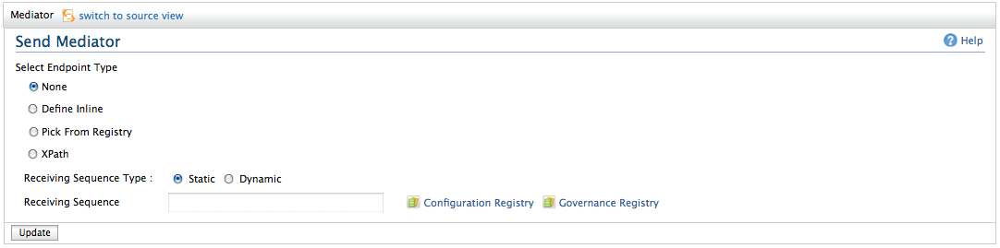

The Send mediator used to send messages out of Synapse to some endpoint. The send mediator also copies any message context properties from the current message context to the reply message received on the execution of the send operation so that the response could be correlated back to the request. Messages may be correlated by WS-A MessageID, or even simple custom text labels (see the property mediator and samples)
Figure 1: Send Mediator Options
You can select the endpoint to be one of the following value.